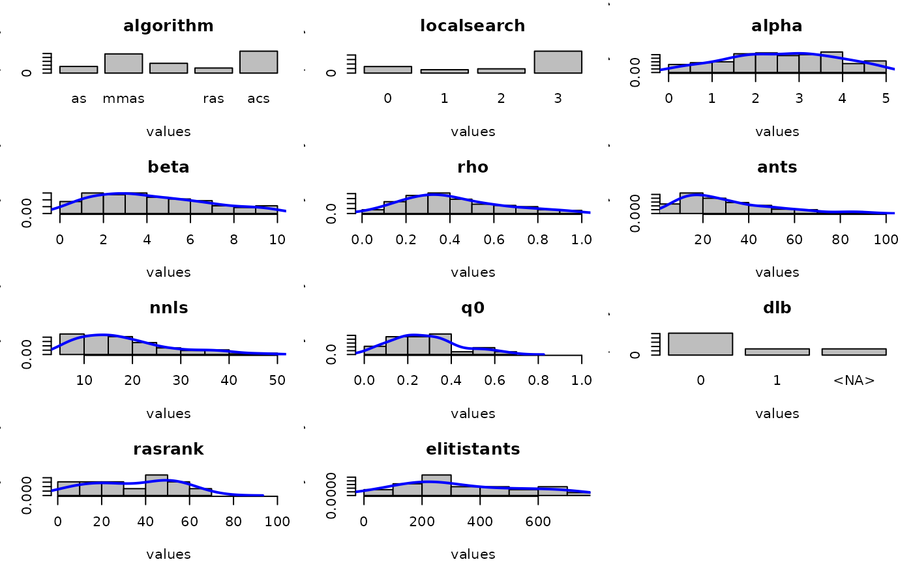

parameterFrequency plots the frequency of the parameters values in a
set of target algorithm configurations. It generates plots showing the
frequency of parameter values for each parameter, with rows *
cols parameters being shown per plot. If a filename is provided the
plots are saved in one or more files.
parameterFrequency(
configurations,
parameters,
rows = 4,
cols = 3,
filename = NULL,
pdf.width = 12,
col = "gray"
)(data.frame)
Parameter configurations of the
target algorithm (one per row).
(list())
Data structure containing the parameter
space definition. The data structure has to similar to the one returned by the
function readParameters.
Number of plots per column.
Number of plots per row.
Filename prefix to generate the plots. If NULL the plot
displayed but not saved.
Width for the pdf file generated.
Color of the bar plot.
readParameters to obtain a valid parameter structure from a parameters file.
readConfigurationsFile to obtain a set of target algorithm configurations from
a configurations file.
# \donttest{
## To use data obtained by irace
# First, load the data produced by irace.
irace.logfile <- file.path(system.file(package="irace"), "exdata", "irace-acotsp.Rdata")
load(irace.logfile) # Creates iraceResults
parameterFrequency(iraceResults$allConfigurations, iraceResults$parameters)
#> Plotting: algorithm
#> Plotting: localsearch
#> Plotting: alpha
#> Plotting: beta
#> Plotting: rho
#> Plotting: ants
#> Plotting: nnls
#> Plotting: q0
#> Plotting: dlb
#> Plotting: rasrank
#> Plotting: elitistants

# }